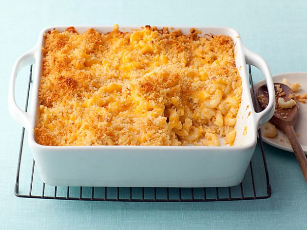

Family Oven Mac and Cheese
Ingredients:
Bread Topping:
Pasta:
Directions
- Shred your cheeses and combine them together into one bowl
- Combine the breadcrumbs and thyme, then mix in the melted butter
- Season the topping with salt and pepper as desired
- Boil the pasta just before it's al dente, you can refer to the packaging if unsure of how long
- Add butter to a pot,then add flour over medium heat while whisking and let cook for about 45 sec to 1 min
- Gradually add in the milk while whisking, and continue whisking until it thickens
- Turn heat to low or off and add in the cheese
- Keep whisking until it becomes liquid and smooth
- Add in the pasta and mix it with the cheese
- Pour pasta into a baking dish and cover with bread topping
- Bake at 350F for 25-30 minutes